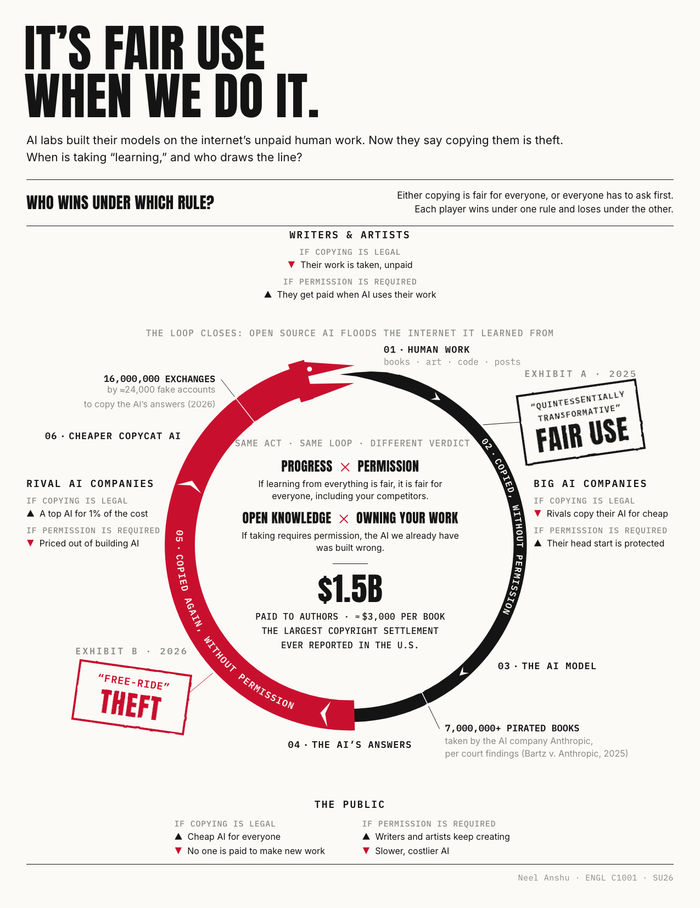

Page 10 of 11 — conclusion & reflection
The Loop Closes on Me Too
Where the Argument Lands
Eleven pages ago this site asked what rule you’d actually accept. The answer I can defend is smaller than the one I wanted: judge the conduct, not the company. The same audit applies to seven million pirated books and to twenty-four thousand fraudulent accounts, and degree gets measured at the input and the output, the way the Copyright Office already measures it. The technical half of this path already exists:
Exhibit 10-A · Henderson et al., JMLR“Experiments confirm that popular foundation models can generate content considerably similar to copyrighted material.”
Henderson’s Stanford team got models to reproduce chapters of copyrighted books nearly word for word. Instead of picking a side, they proposed machinery:
Exhibit 10-B · Henderson et al., p. 1“[W]e suggest that the law and technical mitigations should co-evolve. . . . the law could more explicitly consider safe harbors when strong technical tools are used to mitigate infringement harms.”
Filters, attribution, deduplication, provenance: duties a court can check, matched with safe harbors for whoever performs them. They stamp their own hedge on it, “not a panacea” (1). Nobody gets a clean win here. The conduct rule just makes the fight auditable.


On the Record
Reflection
First person · the assignment’s reflection requirementI should say where I started, because it’s not where I ended. I came in ready to write the satisfying version: the labs are thieves complaining about thievery, case closed. I work in this industry, and the irony felt like a free essay.
The research took that essay away from me twice. Reading the Bartz order closely, I watched the court split the act instead of splitting the difference. It blessed the learning and condemned the acquisition, which meant my whole hypocrisy case lived or died on how thinly I described what each side did. That discovery became the thesis, and it cost me the fun version.
Then I ran my own test on myself. This site was built with AI help, by a student inside the industry it puts on trial. Under the thin rule I’m guilty, and so is nearly everyone reading this. Under the rule I’m actually proposing, I’m not: I paid for a service, broke no access controls, and reproduced nobody’s sentences. That’s the strongest evidence I have that the conduct rule is the one people can actually live under.
One thing stays on the record without smoothing it over: I still benefit from an arrangement whose costs land on the writers in the earnings data. Clean conduct is not the same as clean hands.
The Question, Handed to You
The site ends where the infographic began, with Schur’s question: “Would it be okay if everyone did this?” (256). Except now “this” has to be described honestly before you answer. Pick your rule below. Every one of them convicts somebody you might not expect.

Choose a rule. Its cost is already in the site’s record.
You have blessed the distillers and the flood.
“These labs generated over 16 million exchanges with Claude through approximately 24,000 fraudulent accounts, in violation of our terms of service and regional access restrictions.” (“Detecting”) The distillers — entered on Page 05 · Argument I
“We find that indiscriminate use of model-generated content in training causes irreversible defects in the resulting models, in which tails of the original content distribution disappear.” (Shumailov et al. 755) The flood — entered on Page 08 · Argument IV
You have condemned the tools you used today.
“In short, the purpose and character of using copyrighted works to train LLMs to generate new text was quintessentially transformative.” (Bartz v. Anthropic 13) The blessing this rule revokes — entered on Page 02 · The Dilemma
“Under the thin rule I’m guilty, and so is nearly everyone reading this.” From the Reflection on this page
You have signed up for the harder work of auditing everyone. — including the people who built the thing that helped build this page.
“There is no carveout, however, from the Copyright Act for AI companies.” (Bartz v. Anthropic 14) The same test for everyone — entered on Page 02 · The Dilemma
“[W]e suggest that the law and technical mitigations should co-evolve. . . . the law could more explicitly consider safe harbors when strong technical tools are used to mitigate infringement harms.” (Henderson et al. 1) The machinery for it — Exhibit 10-B, above